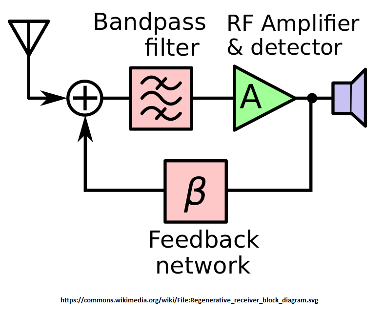
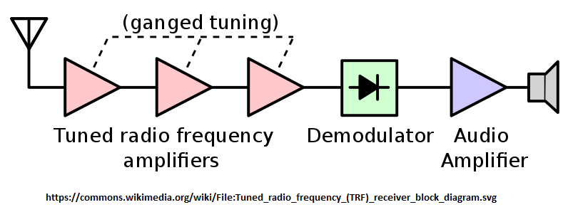
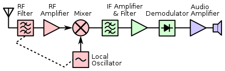
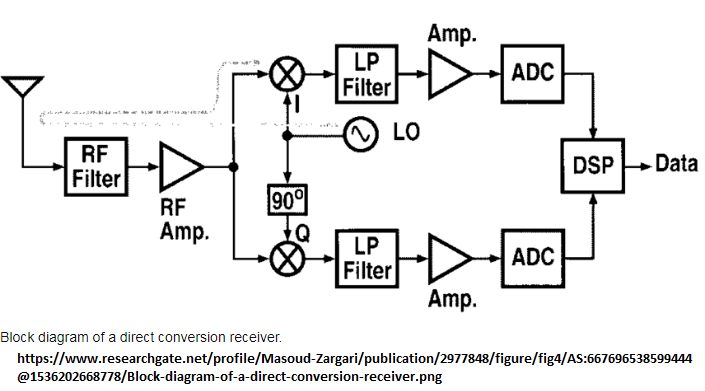

RECETOR SUPER-REGENERATIVO

Pontos positivos: receptor simples e adequado para CW e SSB.
Pontos negativos: largura de banda muito larga sendo muito pouco selectivo.
RECETOR tipo TRF (Tuned Radio requency)

Tem 3 andares de amplificação de RF tendo cada um destes andares necessidade de circuitos sintonizados e sincronizados o que levanta alguns problemas send muito pouco usado.
O nível de detecção normalmente permite a desmodulação de AM.
RECETOR SUPER-HETERODINO

Ao sinal de entrada tem logo um filtro passa banda e logo de seguida um amplificador de RF que interage com um oscilador local onde através de um misturador traduz numa frequência intermédia (IF). Pode ter mais do que 1 oscilador. Pode receber todo o tipo de modulação de acordo com o detector ex: desmodulador de SSB ou CW, ou um detetor de "envolvente" para ter a deteção para AM, ou um "discriminador" no caso de se querer a desmodulação de FM.
Tem sido utilizado este diagrama em equipamentos "pré-SDR".
RECETOR CONVERSAO DIRETA

Tem um filtro passa banda depois amplificação de RF e um oscilador local e de seguida um filtro passa baixo para escutar somente os sinais que estão muito próximos entre a frequência de oscilação e a frequência de recepção através de um misturador.